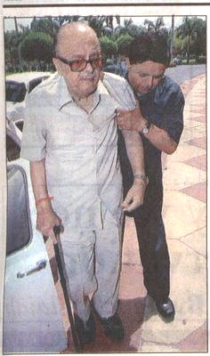
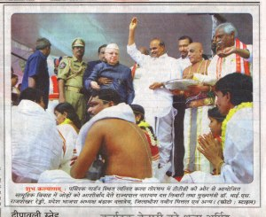

कोई इन्हें क्यों नहीं पूछता कि ये कब सन्यास लेंगे?
अर्जुन सिंह, जिनसे बिना सहारे चला भी नहीं जाता।  
नारायण दत तिवारी, जिन्हें खड़ा होने के लिये भी सहारा लेना पड़ता है।
(चित्र को बड़ा देखने के लिये उस पर क्लिक करें)


इस पोस्ट को भी देखें
यह तो कमाल हो गया
चित्र डेक्कन क्रोनिकल और हिन्दी मिलाप से साभार: